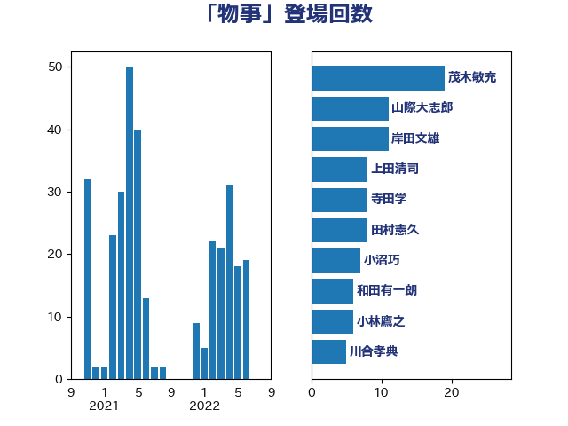

単語「物事」

| 茂木敏充 | 自由民主党 | 19 回 |
| 山際大志郎 | 自由民主党 | 11 回 |
| 岸田文雄 | 自由民主党 | 11 回 |
| 上田清司 | 国民民主党 | 8 回 |
| 寺田学 | 立憲民主党 | 8 回 |
| 田村憲久 | 自由民主党 | 8 回 |
| 小沼巧 | 立憲民主党 | 7 回 |
| 和田有一朗 | 日本維新の会 | 6 回 |
| 小林鷹之 | 自由民主党 | 6 回 |
| 川合孝典 | 国民民主党 | 5 回 |
| 平井卓也 | 自由民主党 | 5 回 |
| 杉本和巳 | 日本維新の会 | 5 回 |
| 石田昌宏 | 自由民主党 | 4 回 |
| 礒崎哲史 | 国民民主党 | 4 回 |
| 自見はなこ | 自由民主党 | 4 回 |
| 菅義偉 | 自由民主党 | 4 回 |
| 上川陽子 | 自由民主党 | 3 回 |
| 前原誠司 | 国民民主党 | 3 回 |
| 勝部賢志 | 立憲民主党 | 3 回 |
| 大串博志 | 立憲民主党 | 3 回 |
| 小野泰輔 | 日本維新の会 | 3 回 |
| 岡田克也 | 立憲民主党 | 3 回 |
| 東徹 | 日本維新の会 | 3 回 |
| 枝野幸男 | 立憲民主党 | 3 回 |
| 柴田巧 | 日本維新の会 | 3 回 |
| 梶山弘志 | 自由民主党 | 3 回 |
| 田名部匡代 | 立憲民主党 | 3 回 |
| 伴野豊 | 立憲民主党 | 2 回 |
| 古川禎久 | 自由民主党 | 2 回 |
| 吉田豊史 | 日本維新の会 | 2 回 |
| 吉良よし子 | 日本共産党 | 2 回 |
| 大塚耕平 | 国民民主党 | 2 回 |
| 山口壯 | 自由民主党 | 2 回 |
| 岸信夫 | 自由民主党 | 2 回 |
| 末松義規 | 立憲民主党 | 2 回 |
| 松本尚 | 自由民主党 | 2 回 |
| 梅村みずほ | 日本維新の会 | 2 回 |
| 沢田良 | 日本維新の会 | 2 回 |
| 田畑裕明 | 自由民主党 | 2 回 |
| 舟山康江 | 国民民主党 | 2 回 |
| 萩生田光一 | 自由民主党 | 2 回 |
| 葉梨康弘 | 自由民主党 | 2 回 |
| 輿水恵一 | 公明党 | 2 回 |
| 逢坂誠二 | 立憲民主党 | 2 回 |
| 長妻昭 | 立憲民主党 | 2 回 |
| 須藤元気 | 無所属 | 2 回 |
| 高野光二郎 | 自由民主党 | 2 回 |
| 三木亨 | 自由民主党 | 1 回 |
| 三浦信祐 | 公明党 | 1 回 |
| 中谷一馬 | 立憲民主党 | 1 回 |
| 井上信治 | 自由民主党 | 1 回 |
| 伊藤孝江 | 公明党 | 1 回 |
| 佐藤啓 | 自由民主党 | 1 回 |
| 加田裕之 | 自由民主党 | 1 回 |
| 原口一博 | 立憲民主党 | 1 回 |
| 古川康 | 自由民主党 | 1 回 |
| 吉川元 | 立憲民主党 | 1 回 |
| 吉川沙織 | 立憲民主党 | 1 回 |
| 堀井巌 | 自由民主党 | 1 回 |
| 大島敦 | 立憲民主党 | 1 回 |
| 大石あきこ | れいわ新選組 | 1 回 |
| 室井邦彦 | 日本維新の会 | 1 回 |
| 宮本岳志 | 日本共産党 | 1 回 |
| 宮路拓馬 | 自由民主党 | 1 回 |
| 寺田静 | 無所属 | 1 回 |
| 小山展弘 | 立憲民主党 | 1 回 |
| 小林茂樹 | 自由民主党 | 1 回 |
| 小泉進次郎 | 自由民主党 | 1 回 |
| 小田原潔 | 自由民主党 | 1 回 |
| 山本順三 | 自由民主党 | 1 回 |
| 岩本剛人 | 自由民主党 | 1 回 |
| 徳永久志 | 立憲民主党 | 1 回 |
| 斎藤アレックス | 国民民主党 | 1 回 |
| 日下正喜 | 公明党 | 1 回 |
| 杉尾秀哉 | 立憲民主党 | 1 回 |
| 松原仁 | 立憲民主党 | 1 回 |
| 森屋隆 | 立憲民主党 | 1 回 |
| 森山浩行 | 立憲民主党 | 1 回 |
| 森本真治 | 立憲民主党 | 1 回 |
| 櫻井周 | 立憲民主党 | 1 回 |
| 水岡俊一 | 立憲民主党 | 1 回 |
| 江田憲司 | 立憲民主党 | 1 回 |
| 河野太郎 | 自由民主党 | 1 回 |
| 泉健太 | 立憲民主党 | 1 回 |
| 津島淳 | 自由民主党 | 1 回 |
| 渡辺創 | 立憲民主党 | 1 回 |
| 湯原俊二 | 立憲民主党 | 1 回 |
| 滝波宏文 | 自由民主党 | 1 回 |
| 片山大介 | 日本維新の会 | 1 回 |
| 玉木雄一郎 | 国民民主党 | 1 回 |
| 田島麻衣子 | 立憲民主党 | 1 回 |
| 石垣のりこ | 立憲民主党 | 1 回 |
| 石破茂 | 自由民主党 | 1 回 |
| 福島伸享 | 無所属 | 1 回 |
| 秋本真利 | 自由民主党 | 1 回 |
| 船田元 | 自由民主党 | 1 回 |
| 菅直人 | 立憲民主党 | 1 回 |
| 藤巻健太 | 日本維新の会 | 1 回 |
| 赤嶺政賢 | 日本共産党 | 1 回 |
| 道下大樹 | 立憲民主党 | 1 回 |
| 野田佳彦 | 立憲民主党 | 1 回 |
| 野田聖子 | 自由民主党 | 1 回 |
| 鈴木宗男 | 日本維新の会 | 1 回 |
| 鈴木憲和 | 自由民主党 | 1 回 |
| 鎌田さゆり | 立憲民主党 | 1 回 |
| 音喜多駿 | 日本維新の会 | 1 回 |
| 鰐淵洋子 | 公明党 | 1 回 |